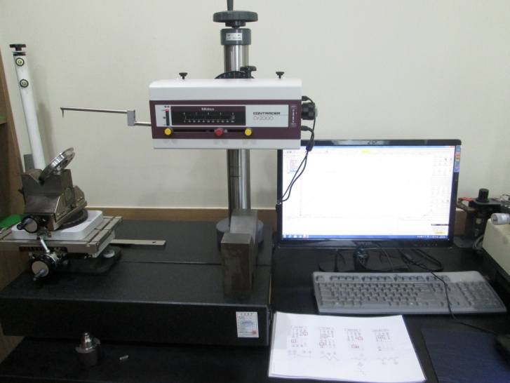

정밀가공 역량
CNC 선반 52대, MCT 18대 등을 활용하여 엔진·변속기·조향 부품을 안정적으로 생산합니다.
정밀가공 기술, 자동화 적용, 측정 신뢰성, 고객 대응 체계를 기반으로 안정적인 양산 대응력을 확보하고 있습니다.
CNC 선반 52대, MCT 18대 등을 활용하여 엔진·변속기·조향 부품을 안정적으로 생산합니다.
로봇 TYPE CNC, 오토로더 TYPE CNC, 자동 치수보정·자동검사 시스템을 지속 적용하고 있습니다.
3차원 측정기, 형상·진원도·조도·비전 측정기 등 정밀 계측 인프라를 보유하고 있습니다.
대한소결금속, 존슨일렉트릭오퍼레이션스, 대광소결금속과 해외 고객 대응 경험을 축적하고 있습니다.
공장 운영, 생산관리, 품질관리, 연구개발, 지원업무가 유기적으로 연계되어 고객 납기와 품질 요구에 대응합니다.

공장 전경, 생산 라인, 검사·포장실, 측정실 등 실제 현장 이미지를 통해 한국정밀의 생산 인프라를 확인할 수 있습니다.


